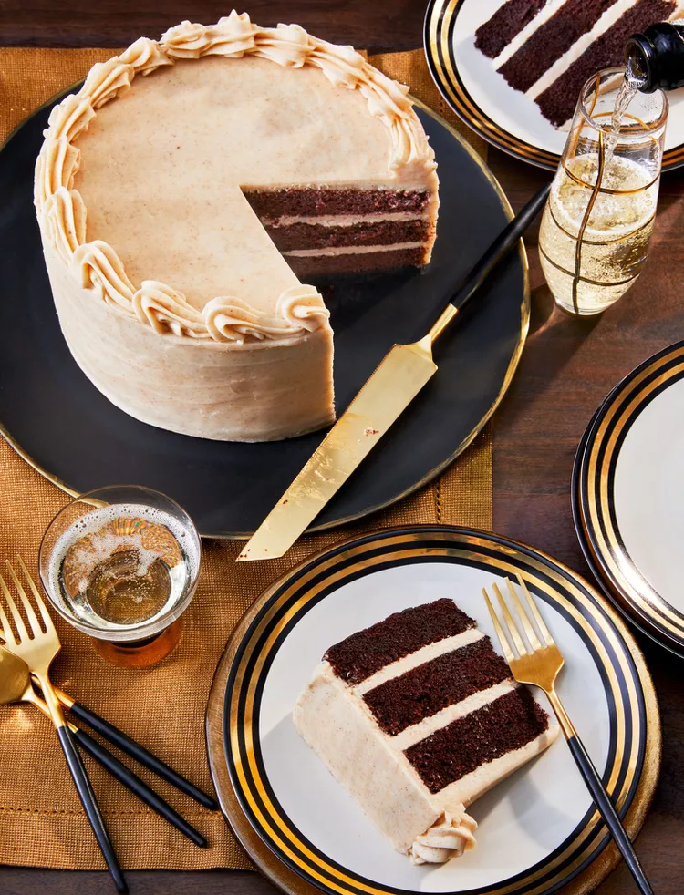

Bourbon-Chocolate Cake with Browned Buttercream Frosting

Ingredients
For the Bourbon-Chocolate Cake:
- 1 3/4 cups all-purpose flour
- 1 1/2 cups granulated sugar
- 3/4 cup unsweetened cocoa powder
- 1 1/2 tsp baking powder
- 1 1/2 tsp baking soda
- 1 tsp salt
- 2 large eggs
- 1 cup buttermilk
- 1/2 cup vegetable oil
- 2 tsp vanilla extract
- 1 cup hot water
- 1/4 cup bourbon
For the Browned Buttercream Frosting:
- 1 cup unsalted butter, softened
- 4 cups powdered sugar
- 1/4 cup heavy cream
- 1 tsp vanilla extract
- Pinch of salt
- 2-3 tbsp bourbon
Instructions
For the Bourbon-Chocolate Cake:
- Preheat oven to 350°F (175°C). Grease and flour two 9-inch round cake pans.
- In a large mixing bowl, sift together flour, sugar, cocoa powder, baking powder, baking soda, and salt.
- Add eggs, buttermilk, oil, and vanilla extract. Beat on medium speed for 2 minutes.
- Stir in hot water and bourbon until well combined (batter will be thin).
- Pour batter evenly into prepared cake pans.
- Bake for 30 to 35 minutes, or until a toothpick inserted into the center comes out clean.
- Remove cakes from oven and let cool in pans for 10 minutes.
- Remove cakes from pans and transfer to wire racks to cool completely.
For the Browned Buttercream Frosting:
- In a saucepan, melt butter over medium heat. Continue cooking, stirring frequently, until butter turns a golden brown color and develops a nutty aroma.
- Remove from heat and let cool to room temperature.
- In a mixing bowl, beat browned butter, powdered sugar, heavy cream, vanilla extract, and salt until smooth and creamy.
- Add bourbon, 1 tablespoon at a time, until desired flavor is achieved.
- If frosting is too thick, add more cream or bourbon. If too thin, add more powdered sugar.
Assembly
- Once the cakes are completely cooled, frost with the browned buttercream frosting.
- Optionally, garnish with chocolate shavings or bourbon-soaked cherries.
- Serve and enjoy your Bourbon-Chocolate Cake!
Enjoy your cake!